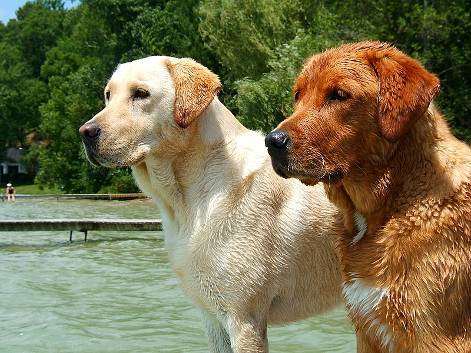

The Labrador Retriever, or just Labrador, is a type of retriever-gun dog. The Labrador is one of the most popular breeds of dog in Canada, the United Kingdom and the United States.
A favourite disability assistance breed in many countries, Labradors are frequently trained to aid the blind, those who have autism, to act as a therapy dog, or to perform screening and detection work for law enforcement and other official agencies. Additionally, they are prized as sporting and hunting dogs.
A few kennels breeding their ancestors, the St. John's water dog, were in England. At the same time, a combination of the sheep protection policy in Newfoundland and rabies quarantine in the United Kingdom, led to the gradual demise of the St. John's water dog in Canada.
In the 1830s, the 10th Earl of Home and his nephews the 5th Duke of Buccleuch and Lord John Scott, had imported progenitors of the breed from Newfoundland to Europe for use as gundogs. Another early advocate of these Newfoundland dogs, or Labrador Retrievers as they later became known, was the 2nd Earl of Malmesbury who bred them for their expertise in waterfowling.
Description
Labradors are medium-large, with males typically weighing 65–80 lb (29–36 kg) and females 55–70 lb (25–32 kg).[26] The majority of the characteristics of this breed, with the exception of colour, are the result of breeding to produce a working retriever.
As with some other breeds, the Conformation (typically "Show", "English" or "bench") and the Field (typically "Working" or "American") lines differ, although both lines are bred in both countries. In general, however, Conformation Labradors tend to be bred as medium-sized dogs, shorter and stockier with fuller faces and a slightly calmer nature than their Field counterparts, which are often bred as taller, lighter-framed dogs, with slightly less broad faces and a slightly longer nose. However, Field Labradors should still be proportional and fit within American Kennel Club standards. With Field Labradors, excessively long noses, thin heads, long legs, and lanky frames are not considered standard. These two types are informal and not codified or standardised; no distinction is made by the AKC or other kennel clubs, but the two types come from different breeding lines. Australian stock also exists; though not seen in the West, they are common in Asia. These dogs are also very good with children.